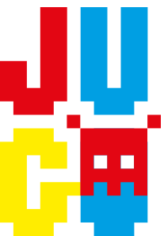
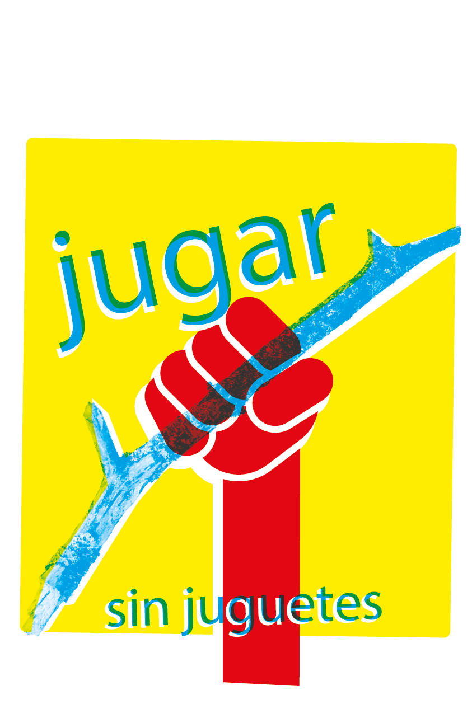

La revista para exprimir al máximo los ratos del juego
Suscripción
Artículos
Nosotros
Contacto
INICIO
ARTICULOS
VITAMINA C
COMO CONSTRUIR UNA BASE SECRETA
ARTÍCULOS
Vitamina C
Un zumo con..
¿A qué "jugo" hoy?
El frutero
Suscríbete a JUGO

Recientes
¿Cómo construir una base secreta?
Jugar sin juguetes
8 juegos con palos
Mikado